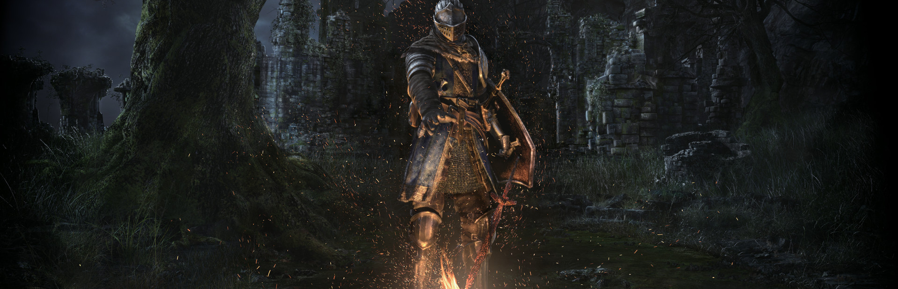
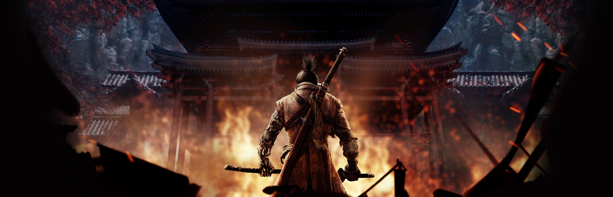
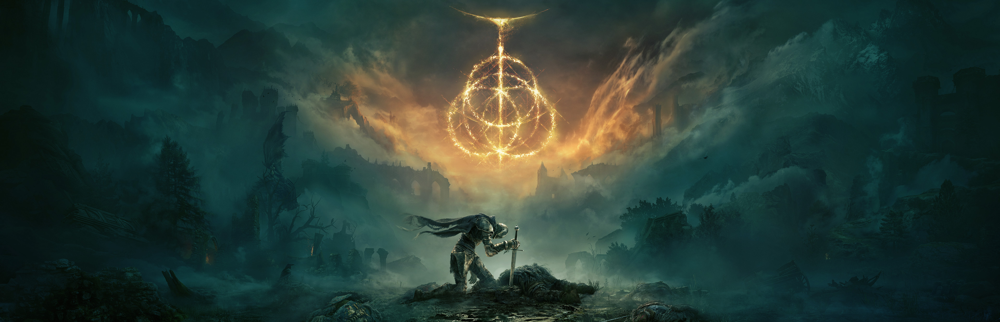

5. Detroit: Become Human
A narrative-driven game that explores the complex themes of artificial intelligence, free will, and morality.
What Makes This Game Good:
- Interactive Storytelling: The game offers a highly branching narrative where every choice you make can drastically alter the storyline. This leads to multiple endings and replayability.
- Immersive Visuals and Sound: The game boasts stunning graphics and a compelling soundtrack that immerses players in its futuristic setting.
- Complex Characters: The game features a rich cast of characters, each with their own motivations and backgrounds, allowing players to form deep emotional connections with them.
Here's the trailer of Detroit: Become Human:
4. Dark Souls
A challenging action RPG known for its punishing difficulty, intricate world design, and deep lore.
What Makes This Game Good:
- Deep and Rewarding Combat: Dark Souls offers a combat system that demands precision, timing, and strategy. Every encounter feels significant, making victories immensely satisfying.
- Intricate World Design: The game features a carefully interconnected world with secrets and hidden paths, encouraging exploration and discovery.
- Atmospheric Storytelling: The game tells its story through environmental details, item descriptions, and cryptic dialogues, creating a rich and immersive experience.
Here's the trailer of Dark Souls:
3. Sekiro
The hardest game I ever played. I love the combat of this game; it's just so satisfying to do a combo attack, truly one of the best feelings.
What Makes This Game Good:
- Unique Combat System: The game features a distinctive combat system centered around posture and parrying, which sets it apart from other action games. The emphasis on timing and precision adds depth and excitement to battles.
- Beautiful World Design: The game is set in a meticulously crafted world inspired by late 1500s Sengoku period Japan. The level design is intricate and interconnected, encouraging exploration and rewarding players with hidden secrets and shortcuts.
- Challenging Difficulty: Sekiro is known for its challenging difficulty. This provides a sense of accomplishment and satisfaction when players overcome tough enemies and bosses.
Here's my gameplay of Sekiro, defeating one of the bosses:
2. Elden Ring
The name is enough. This game is like the pinnacle of gaming; everyone has this in their top 3 list.
What Makes This Game Good:
- Expansive Open World: The game features a vast, interconnected world filled with diverse landscapes, intricate dungeons, and numerous secrets to uncover. The open-world design allows for exploration and discovery, giving players a sense of freedom and adventure.
- Rich Lore and Storytelling: The game features deep lore and a captivating narrative co-written by Hidetaka Miyazaki and George R.R. Martin. The story is delivered through environmental storytelling, item descriptions, and character interactions, encouraging players to piece together the world's history.
- Memorable Boss Fights: The game features numerous memorable boss encounters, each with unique designs, mechanics, and challenges. These battles are often the highlight of the game, providing epic and rewarding experiences.
Here's the trailer of the Elden Ring game:
1. Red Dead Redemption 2
This is one of the longest games I ever completed. The main character of this game makes such a good emotional connection with the player that players cry as soon as they reach the end of the game.
What Makes This Game Good:
- Character Development: The characters in the game are well-developed and multi-dimensional. Arthur Morgan's character arc, in particular, is praised for its depth and nuance, making him one of the most memorable protagonists in gaming.
- Stunning Visuals: The game boasts exceptional graphics, with realistic lighting, weather effects, and highly detailed character models. The visual fidelity enhances the overall experience and contributes to the game's immersive quality.
- Realistic Mechanics: The game includes realistic mechanics such as horse riding, weapon maintenance, and survival elements like eating and sleeping. These mechanics add to the authenticity and immersion of the game world.